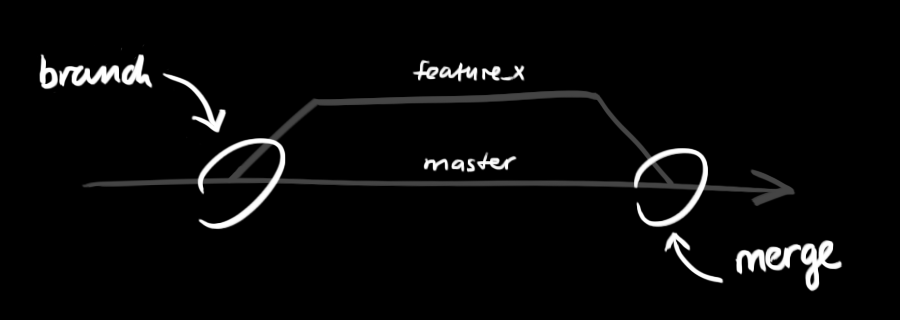

If you are a Coder, but you don't know GitHub, then I think you are not even a rookie-level Coder, because you are not a real Coder at all, you are just a Code porter.
But if you are already reading this article, I think you already know GitHub.
It is GitHub that makes social coding a reality.
What is GitHub?
GitHub is a code hosting platform based on git. Paying users can create private repositories, while ordinary free users can only use public repositories, meaning the code must be public.
GitHub was founded in April 2008 by three developers: Chris Wanstrath, PJ Hyett, and Tom Preston-Werner. To date, it has 59 full-time employees and mainly provides git-based version hosting services.
So far, this GitHub adventure has won out. According to the description of GitHub from Wikipedia, we can vividly see GitHub's growth rate:

Today, GitHub is:
- A community with 1.43 million developers. Among them are the inventor of LinuxTorvaldssuch top hackers, and the founder of RailsDHHsuch young geeks.
- The most popular open-source hosting service on the planet. It currently hosts 4.31 million git projects. Not only are more and more well-known open-source projects moving to GitHub, such as Ruby on Rails, jQuery, Ruby, Erlang/OTP; in the past three years, popular open-source libraries often debut on GitHub, for example:BootStrap、Node.js、CoffeScriptetc.
- A website ranked 414 globally on Alexa.
Register Account and Create a Repository
To use GitHub, the first step is of course to register a GitHub account. GitHub official website address:https://github.com/. After that, you can create a repository (free users can only create public repositories). Click "Create a New Repository", fill in the name and click "Create". Then some repository configuration information will appear, which is also a simple git tutorial.
GitHub Installation
Configure Git
First, create locallyssh key；
$ ssh-keygen -t rsa -C "your_email@youremail.com"
the followingyour_email@youremail.comChange it to the email you registered on GitHub. After that, it will ask you to confirm the path and enter a password. We just press Enter all the way using the defaults. If successful, it will be generated~/under.sshfolder. Go in, openid_rsa.pubcopy thekey。
Go back to GitHub, enter Account Settings, select SSH Keys on the left, click Add SSH Key, fill in any title, and paste the key generated on your computer.

To verify whether it is successful, enter the following in git bash:
$ ssh -T git@github.com
If it is the first time, you will be prompted whether to continue. Enter yes and you will see: "You've successfully authenticated, but GitHub does not provide shell access". This means you have successfully connected to GitHub.
Next, what we need to do is push the local repository to GitHub. Before that, we also need to set username and email, because GitHub records them on every commit.
$ git config --global user.name "your name" $ git config --global user.email "your_email@youremail.com"
Enter the repository to upload, right-click to open git bash, and add the remote address:
$ git remote add origin git@github.com:yourName/yourRepo.git
The yourName and yourRepo after it represent your GitHub username and the repository you just created. After adding, go into .git and open config. Here, an additional `remote "origin"` content will appear, which is the remote address just added. You can also directly modify config to configure the remote address.
Create a new folder, open it, then execute
git initto create a new git repository.
Check Out the Repository
Execute the following command to create a clone of a local repository:
git clone /path/to/repository
If the repository is on a remote server, your command will look like this:
git clone username@host:/path/to/repository
Workflow
Your local repository consists of three "trees" maintained by git. The first is yourWorking directory, which holds the actual files; the second is暂存区（Index）, which is like a cache area, temporarily saving your changes; finally, there isHEAD, which points to the result of your last commit.
You can propose changes (add them to the staging area) using the following command:
git add <filename>
git add *
This is the first step in the basic git workflow. Use the following command to actually commit the changes:
git commit -m "代码提交信息"
Now, your changes have been committed toHEAD, but not yet to your remote repository.

Push Changes
Your changes are now in the local repository'sHEADbranch. Execute the following command to push these changes to the remote repository:
git push origin master
You can changemasterto any branch you want to push.
If you haven't cloned an existing repository and want to connect your repository to a remote server, you can use the following command to add:
git remote add origin <server>
In this way, you will be able to push your changes to the added server.
Branches
Branches are used to isolate feature development. When you create a repository,masteris the "default" branch. Develop on other branches, and after completion, merge them back into the master branch.

Create a branch called "feature_x" and switch to it:
git checkout -b feature_x
Switch back to the master branch:
git checkout master
Then delete the newly created branch:
git branch -d feature_x
Unless you push the branch to the remote repository, the branch will beinvisible to others.：
git push origin <branch>
Update and Merge
To update your local repository to the latest changes, execute:
git pull
to, in your working directory,fetchandmergechanges from the remote.
To merge another branch into your current branch (e.g., master), execute:
git merge <branch>
In both cases, git will try to automatically merge changes. Unfortunately, this may not always succeed, andconflicts.
At this point, you need to modify these files to manually merge theseconflicts. After making the changes, you need to execute the following command to mark them as successfully merged:
git add <filename>
Before merging changes, you can use the following command to preview the differences:
git diff <source_branch> <target_branch>
Tags
Creating tags for software releases is recommended. This concept has existed for a long time, and it also exists in SVN. You can execute the following command to create a tag called1.0.0tag:
git tag 1.0.0 1b2e1d63ff
1b2e1d63ffis the first 10 characters of the commit ID you want to tag. You can use the following command to get the commit ID:
git log
You can also use fewer leading characters of the commit ID, as long as its reference is unique.
Replace Local Changes
If you make a mistake (of course, this should ideally never happen), you can use the following command to replace local changes:
git checkout -- <filename>
This command will replace the files in your working directory with the latest content from HEAD. Changes already added to the staging area and new files will not be affected.
If you want to discard all your local changes and commits, you can fetch the latest version history from the server and point your local master branch to it:
git fetch origin
git reset --hard origin/master
Useful Tips
Built-in graphical git:
gitk
Colored git output:
git config color.ui true
When displaying history, show only one line of information per commit:
git config format.pretty oneline
Interactively add files to the staging area:
git add -i
Links and Resources
Graphical Clients
- GitX (L) (OSX, open-source software)
- Tower (OSX)
- Source Tree (OSX, free)
- GitHub for Mac (OSX, free)
- GitBox (OSX, App Store)
Guides and Manuals
Related Articles
- GitHub Concise Guide:http://rogerdudler.github.io/git-guide/index.zh.html
- How to efficiently use GitHub:http://www.yangzhiping.com/tech/github.html